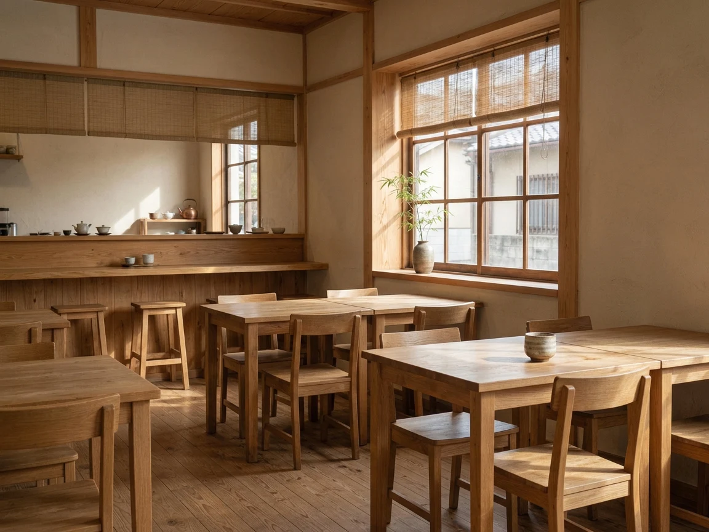
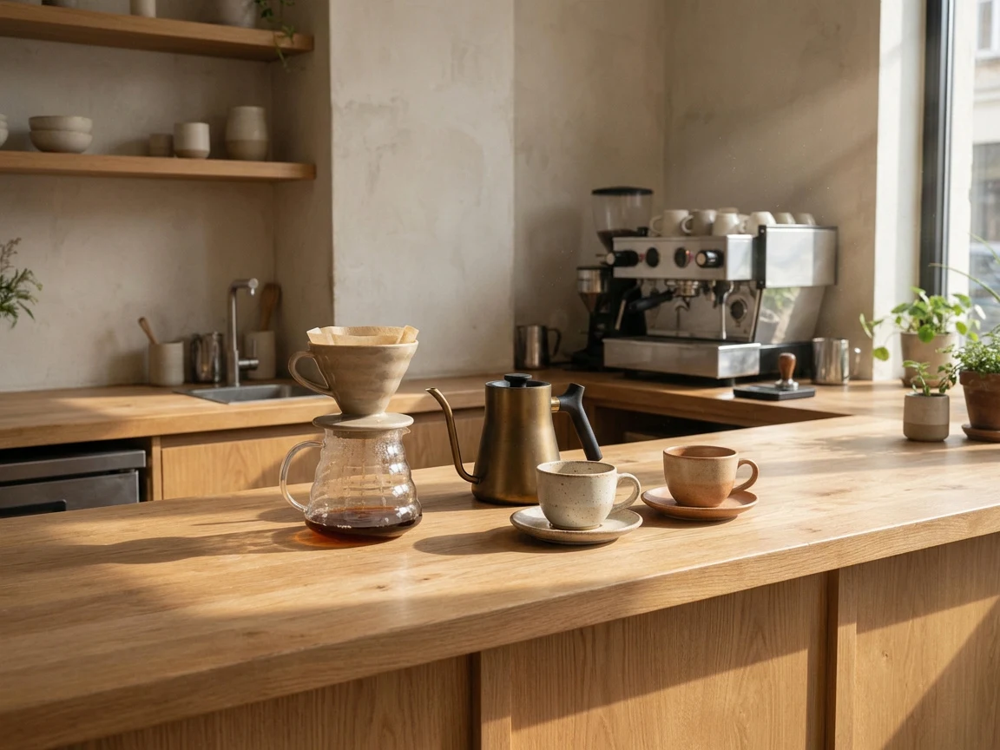
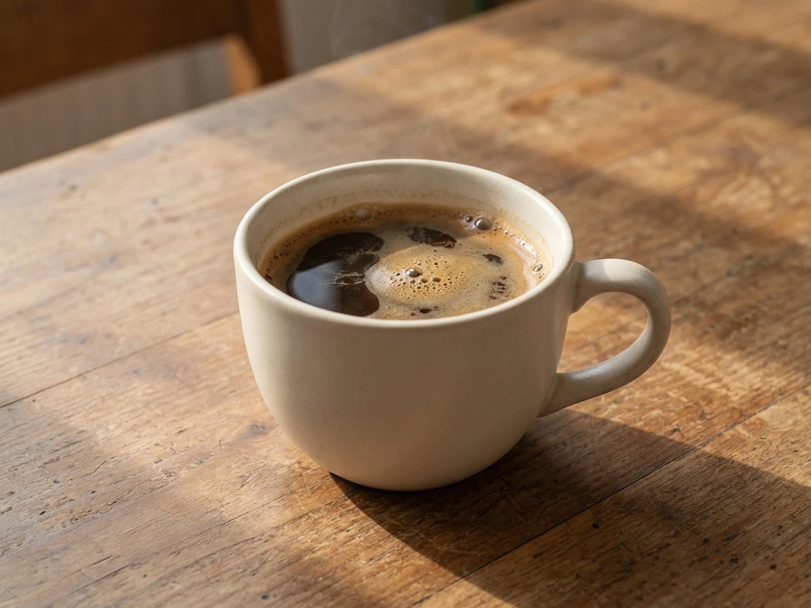

Tired of loud cafes and rushed mornings? Step out of Shimokitazawa Station and take a 3-minute walk to Sora Coffee.

Your Morning
Start with the 3-minute walk from Shimokitazawa Station to Sora Coffee, open 8:00 to 18:00, closed Wednesdays.

Walk up to the counter and choose a drink or slice for your morning stop.

Take a seat inside and enjoy your first cup in a quiet space.
Sora Coffee
Visit Us
Come visit Sora Coffee, 3 minutes from Shimokitazawa Station. Open 8:00 to 18:00, closed Wednesdays.